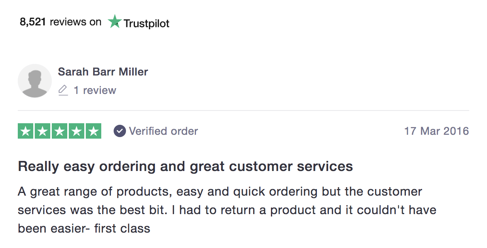

work
Fetch and Sizzle
UX and Design Chapter Lead
Fetch is Ocado, but for pets. We look after your pet’s shopping list – from natural, grain-free food to more specialised diets, toys, and treats. In 2016, Fetch was one of the top e-commerce destinations for pet owners in the UK.
Built, scaled, and coached an in-house agile UX and UI design team.
Led all aspects of the UX and UI design.
Defined and executed the design language and strategy.
Designed from scratch the user experience and visual interface of the multi-brand e-commerce platform (responsive and with a mobile-first approach).
Liaised with developers, analysts, marketing and merchandise personnel, and product owners to deliver user-centred and business validated outcomes.
Contributed on the brand development.
My journey
We just released the newly branded ocado.com when they offered me the opportunity to start-up and lead the UX of the new general merchandise operation. After two intense years in the Ocado grocery's department, I moved to something new and exciting. As a matter of fact, and considering the number of players, I jumped into a real start-up experience.
Being actively hands-on, I didn't need many resources. My team was intentionally small but truly capable, agile, and creative.
We started with facing a white canvas. Eight months later, after extensive research and proofs-of-concept, we launched the first version of Fetch.co.uk. It was some sort of minimum viable product, powerful enough to kick-off the operation.
Soon after, though, we learned that it wasn't scalable enough to meet the mobile and tablet users' expectations. Resources and timing made us move towards the idea of making the platform responsive instead of developing native apps.
Six to eight months later, after working side by side with the development teams, we released our mobile-first and responsive platform proudly. In this rework, we significantly improved our design by defining a design language and arranging the UI elements in a way to imply importance in a hierarchical structure; we created a visual style to guide the users and enhance their experience.
Fetch and Sizzle were now not only mobile-friendly and more accessible for users, but also more scalable for future features implementations.
In 2016, Fetch was one the top e-commerce destinations for pet owners in the UK.
A General Merchandise Platform for Ocado.
An essential element of Ocado's growth strategy is the launch of new 'destination' sites. These are specialist sites selling items not usually found in a supermarket setting but which can be sold on the same technology and fulfilment offering as Ocado.com, enabling customers to enjoy the benefits of online grocery shopping such as same- or next-day delivery.
